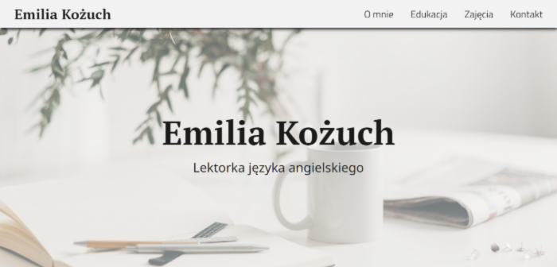
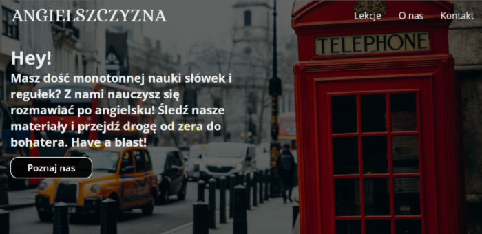
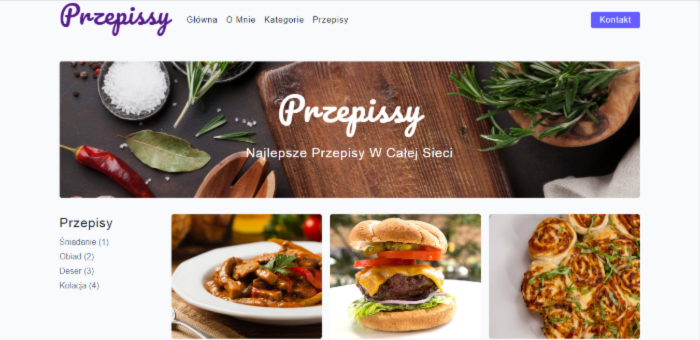
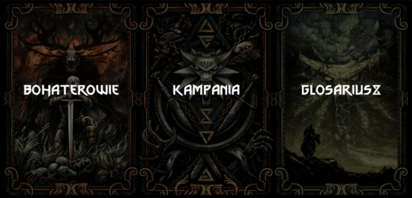

My Realisations
Every project that I develop starts with an idea, no matter if it is a personal
or commercial website. I pay a lot of attention to aesthetics, so I spend a lot
of time choosing the right typography and color palette. The next step is to
wireframe the site in Figma, tweak and change the layout to look great both on
desktop and mobile. In fact, I always start by mocking up mobile design. After
showing high fidelity wireframe to the client and getting approval that everything
is good I start coding and building project functionalities. The projects listed
below are among my best.
Emilia Kożuch Portfolio

Personal portfolio of Mrs. Emilia Kożuch, a professional English teacher
conducting online classes. The site was built with aesthetics and
clear design. The RWD, SASS and BEM methodology was used to build this project.
Site
Code
Angielszczyzna

This site was built for an online English school that offers free courses on
various social media and streaming platforms. This webpage has an introductory
video with subtitles in two languages.
Site
Code
Hardcore Gym
This fictitious gym website is a showcase for a company, it includes training plans
and a fitness form. The page contains contact details, prices for specific
products, and an iframe map that can be clicked and.
Site
Code
Przepissy

The book with the best recipes online, contains different categories of
dishes and detailed instructions on how to make them. Each recipe has a
specific cooking time and number of servings.
Site
Code
Wiedźmin

This project is special for me because it concerns my beloved universe.
This app helps you to play The Witcher RPG. Here you can roll dice, fight
with a sword and view your character's stats.
Site
Code
About me
I am a young ambitious man who is not afraid of new challenges. Most of my free
time is spent on programming and learning. I typically spend several hours
daily developing my skills because I beleve that consistency and routine are key
factors to any succes that one can achieve in a life.
There are no shortcuts to any place worth going
Programmer
In my frontend journey, I learned how important it is to write clean and semantic
HTML code focused on accessibility, it is something that is sometimes overlooked.
I know all of the modern CSS layout techniques and when to apply them, I pay much
attention to typography and visual hierarchy of the content on the page. I know color
theory and the concept of good UI design. In all my current projects I use SASS to
split big CSS files into partials and I utilize neat code indentation using SCSS.
When it comes to JavaScript I use ES6 features but also I have an understanding of
previous versions to be able to work with the legacy code. I know a bit of JQuery
and I can freely traverse through the DOM and preform various tasks using Document
Object Model. Currently, I am diving deeper into asynchronous JS and soon I will
jump to React.
Student
I am currently studying English Philology Practical Profile which combines soft
communication skills, business, and computer science. I have experience working with clients,
how to communicate effectively in multi national teams and how to manage big projects.
I have experience with ERP systems like Microsoft Dynamics and with writing
corporate correspondance.
Guitarist
Outside of my studies, I play the electric guitar and I love heavier music. Often after a
hard and tiring day I plug my guitar into an amp and let the stress away. Music has been
my passion and theraphy for almost a decade. The biggest disadvantage of life is that
it doesn’t have a soundtrack!
If you are interested in collaboration or you have
any questions please don't hesitate to ask!
Write an email or message me on my social media.
Email: radosław-siek.web-dev.wp.pl